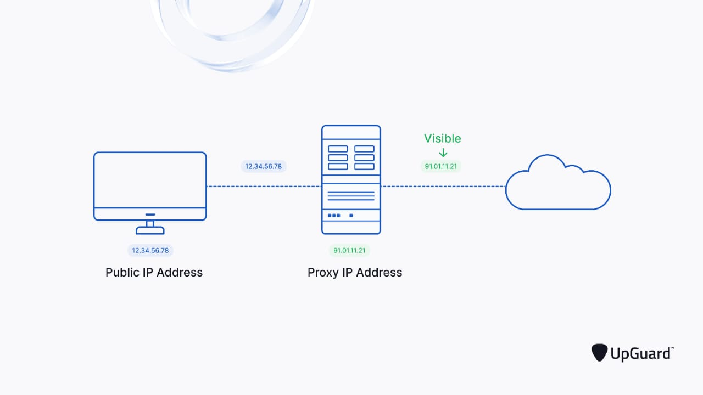
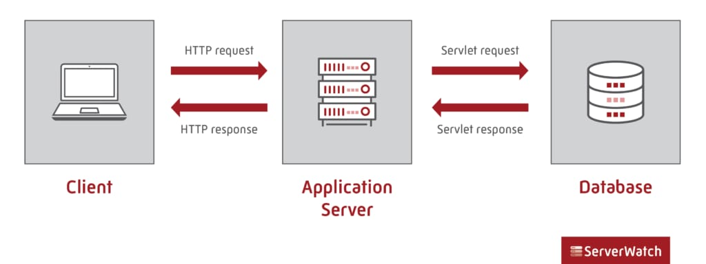
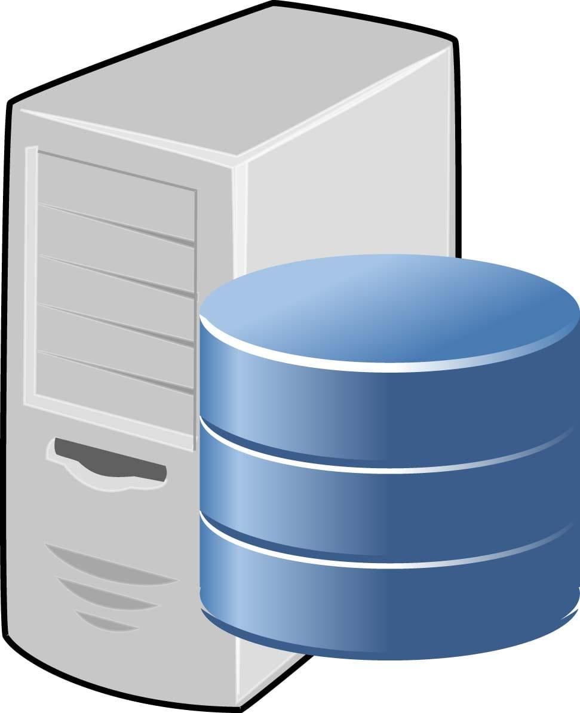
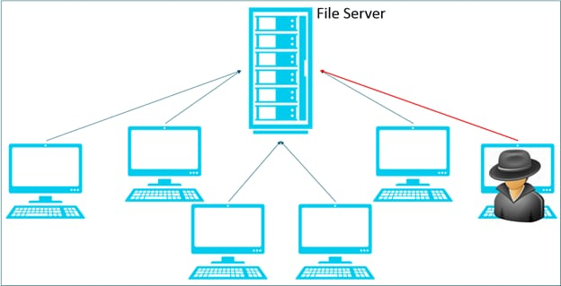

A web server is a computer that runs websites. It's a computer program that distributes web pages as they are requisitioned. The basic objective of the web server is to store, process and deliver web pages to the users. This intercommunication is done using Hypertext Transfer Protocol (HTTP).
These web pages are mostly static content that includes HTML documents, images, style sheets, test etc. Apart from HTTP, a web server also supports SMTP (Simple Mail transfer Protocol) and FTP (File Transfer Protocol) protocol for emailing and for file transfer and storage.

A proxy server is a system or router that provides a gateway between users and the internet. Therefore, it helps prevent cyber attackers from entering a private network. It is a server, referred to as an “intermediary” because it goes between end-users and the web pages they visit online.
When a computer connects to the internet, it uses an IP address. This is similar to your home’s street address, telling incoming data where to go and marking outgoing data with a return address for other devices to authenticate. A proxy server is essentially a computer on the internet that has an IP address of its own.
Proxy Servers and Network Security
Proxies provide a valuable layer of security for your computer. They can be set up as web filters or firewalls, protecting your computer from internet threats like malware. This extra security is also valuable when coupled with a secure web gateway or other email security products. This way, you can filter traffic according to its level of safety or how much traffic your network—or individual computers—can handle.

An application server is a modern form of platform middleware. It is system software that resides between the operating system (OS) on one side, the external resources (such as a database management system [DBMS], communications and Internet services) on another side and the users’ applications on the third side. The function of the application server is to act as host (or container) for the user’s business logic while facilitating access to and performance of the business application. The application server must perform despite the variable and competing traffic of client requests, hardware and software failures, the distributed nature of the larger-scale applications, and potential heterogeneity of data and processing resources required to fulfill the business requirements of the applications.

A database server is any server that runs a network database application and maintains database files, such as Microsoft SQL Server or Oracle. SQL Server is a high-performance database management system.

A file server is a computer responsible for the storage and management of data files so that other computers on the same network can access the files. It enables users to share information over a network without having to physically transfer files.
The file server takes on the computer or server role to store and make available data BLOBs to clients, serving as a central location to store and share files for a network. They can be limited to a single local area network (LAN) or can be open to the internet.
File servers make storing, securing and sharing files in an organization simpler. File servers are a common target for hackers and ransomware, so particular attention must be given to securing them against attacks.
 (1).jpeg)
What Is the Purpose of an Email Server?
At its simplest, a mail server collects and distributes emails to their intended destination. You can think of it as a computer that acts as an electronic post office for email, which allows you to control the transfer of emails within a network through different protocols.